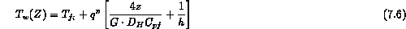
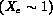

To understand the limits on the critical heat flux it is useful to compute its upper and lower bounds. The simplest situation to consider is the case of a uniform heat flux on the heater wall. For a variable heat flux these limits apply but one must numerically integrate the equations. The lower bound on CHF would be that heat flux which first causes the heater wall to rise to the fluid saturation temperature,  . By a one-dimensional energy balance on the channel one finds
. By a one-dimensional energy balance on the channel one finds

where h is the single phase heat transfer coefficient. If we set the wall temperature equal to the fluid saturation pressure we find the minimum critical heat flux for any axial location in the uniformly heated channel, given by
The upper bound on the critical heat flux is that uniform heat flux which would cause the fluid to completely evaporate  . Once again we can use the one-dimensional energy balance for the fluid and set the thermodynamic equilibrium quality to one and solve for the maximum CHF for a given axial location
One can conceptually visualize these two bounds on the critical heat flux by looking at their variation as a function of the axial location in the channel and the inlet subcooling when one computes the critical heat flux from correlation for uniform heating it should be within these bounds (Figure 7.6).